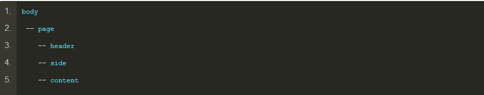

参考
 其中page扮演传统页面<body>的角色。这是一个预留设计，防止为了满足某些功能或交互体验需要，一个页面同时出现多个类似结构页面的情况。或者这么说吧，把所有页面内容放在一个page中，此时page就好比一个可以移动的房子，回头你跳槽来腾讯了，房子可以一起带过来，原来的位置可以被其他房子代替。但是，你如果直接放在<body>中，由于<body>只能是一个，不动产，此时想要做整体迁移，难度就较大，同时项目几乎成型，全局修改成本高高风险大。不过凡事都有两面性，这样的折腾可以减少你白头发的数目，因为你会因操劳过度头发直接脱掉的
page相关CSS如下：
.page { position: absolute; top: 0; right: 0; bottom: 0; left: 0; }
应该很好理解，绝对定位，满屏拉伸，等同于：
.page { position: absolute; top: 0; left: 0; width: 100%; height: 100%; }
对于固定的头部header或者固定的侧边side, 你可以使用语义明确的position:fixed定位，或者直接使用position:absolute，因为滚动容器跟他们平级，所以，absolute其实就是fixed效果。
讲到这里就不得不说点题外话，很多人会遇到移动端position:fixed的底部输入框定位的头疼问题，如何解决？就是使用本文介绍的内滚动布局，然后底部使用position:absolute模拟fixed效果
.header { height: 62px; position: absolute; top: 0; right: 0; left: 0; }
.side { width: 200px; position: absolute; top: 62px; bottom: 0; left: 0; }
.content { position: absolute; top: 62px; right: 0; bottom: 0; left: 200px; overflow: auto; }